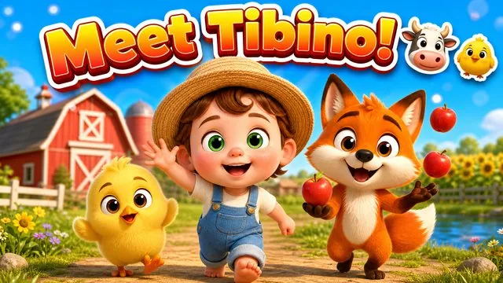
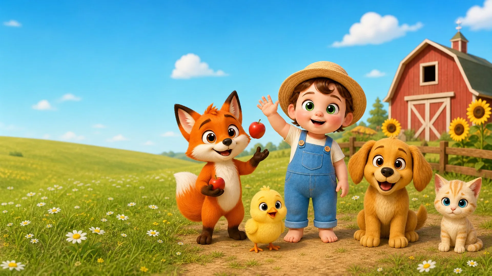
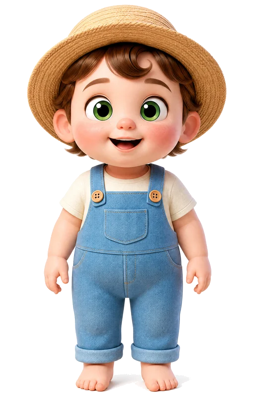
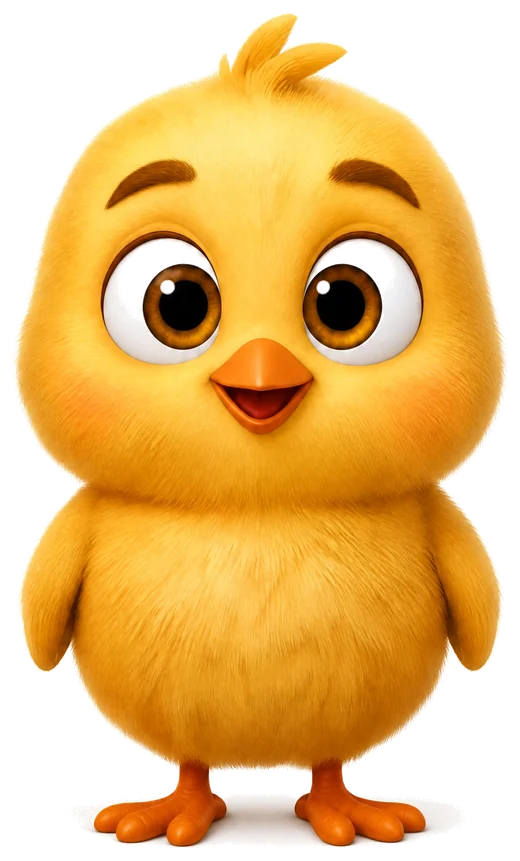
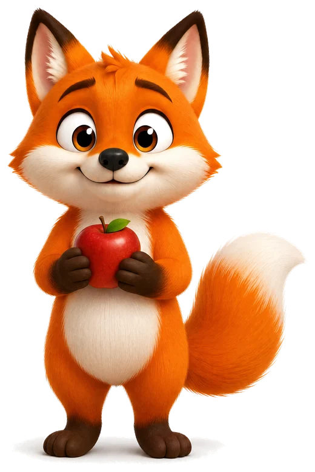
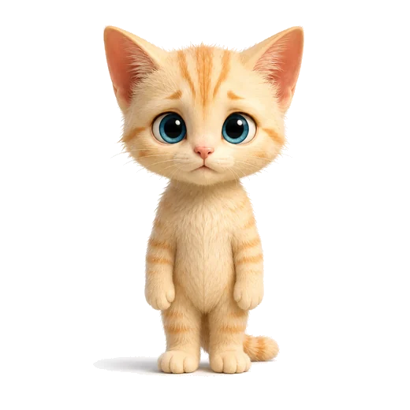
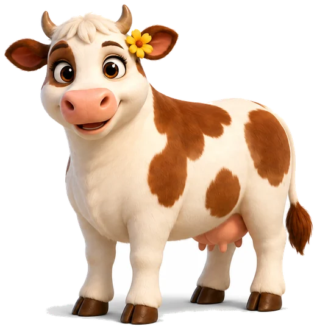
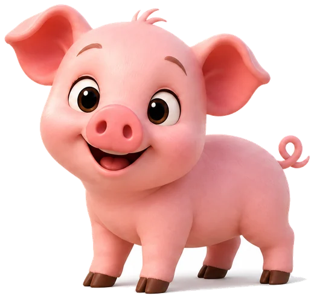
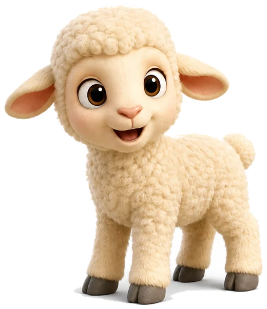

New stories regularly
Watch an episode
Gentle 3D cartoons for toddlers and preschoolers — calm stories, friendly animals and happy endings. Nothing scary, ever.
The happiest little farm
Meet the Friends
Tap a friend to find out more about them.

TibinoThe little farmerRead more
Tibino is a kind little boy who lives on the farm. He wears a straw hat, blue dungarees and no shoes at all — because grass feels nicer on bare feet.
He is happiest when he can help somebody. If an animal is lost, cold or scared, Tibino is the first one running.
“Hi, I am Tibino. This is my farm. Come and say hello.”
Everything about Tibino →

PipThe little chickRead more
Pip is the smallest one on the farm and Tibino's best friend. He is very fast, very fluffy and just a little bit nervous about everything.
He is happiest when everyone is together — and when nobody asks him to go near the water.
“I am Pip. I am very small and a little bit shy, but when a friend needs me, I am always brave.”
Everything about Pip →

FoxyThe playful foxRead more
Foxy walks on two legs and can juggle three apples at once — he will show you whether you asked or not.
He is happiest when somebody watches his tricks. Underneath all the showing off, Foxy simply likes having friends.
“I am Foxy. I used to play all by myself. Now I have friends and that is much better.”
Everything about Foxy →StormThe brave puppyRead more
Storm is a round golden puppy with ears that fly out sideways when he runs. He runs almost everywhere.
He is happiest when he can be helpful. When a kitten was drifting down the river, Storm went straight into the water without stopping to think.
“I am Storm. I run the fastest on the whole farm, but my favourite thing is sitting right beside you.”
Everything about Storm →

MiloThe new kittenRead more
Milo is the newest friend on the farm. He arrived in a basket on the river, cold and shivering, and the others dried him and gave him warm milk.
He is happiest when somebody sits next to him quietly. Milo is still shy — but he purrs now, and that is a very good sign.
“I am Milo. I am the newest one here. Everyone made room for me right away.”
Everything about Milo →

DaisyThe gentle cowRead more
Daisy is the biggest friend on the farm and by far the calmest. She has a white coat with warm brown patches and a little yellow flower behind one ear.
She is happiest when somebody small needs somebody big. Daisy never hurries anyone — she simply stands there until you feel better.
“I am Daisy. If you ever feel small, come and stand beside me. There is always room here for you.”
Everything about Daisy →

RosieThe bouncy pigletRead more
Rosie is a tiny pink piglet with a curly tail that wiggles when she is excited, which is most of the time. She is the loudest friend on the farm.
She is happiest when it has just rained. Rosie believes a puddle is better with friends in it, and she will invite everybody.
“I am Rosie. I am loud and I am bouncy and I love mud the most.”
Everything about Rosie →

WoollyThe littlest lambRead more
Woolly is a small cream-coloured lamb with soft curly wool and grey hooves. He is the youngest of all the friends and still learning the way around.
He is happiest when somebody finds him. Woolly gets lost more often than anyone — and every single time, his friends come looking.
“I am Woolly. When I get lost, my friends always come and find me.”
Everything about Woolly →Made with care
For Parents
Everything you might want to know before you press play.
Is Tibino Kids safe for toddlers?
Yes. Every episode is made for children aged 2 to 6. There is no violence, no scary music, no jump scares and no frightening characters. Problems are solved with kindness, and every episode ends happily. All videos are published as Made for Kids on YouTube, which switches off personalised advertising and comments.
What age is it for?
Toddlers and preschoolers, roughly 2 to 6 years old. The pacing is slow, the sentences are short, and each episode follows one simple idea so very young children can follow along on their own.
Does it teach anything?
Each episode is built around one gentle lesson — kindness, helping a friend, sharing, patience or courage. Along the way children hear farm animal sounds, animal names, colours and counting woven into the story rather than drilled.
Are there ads or things to buy?
There is nothing to buy and nothing to click inside the videos. Because the episodes are marked Made for Kids, personalised advertising is switched off. This website collects no personal data — there are no sign-up forms, no newsletter and no tracking.
Where is the best place to watch?
All episodes are free on our YouTube channel. For the calmest experience we recommend the YouTube Kids app or supervised playback, so children stay inside age-appropriate content.
How often do new episodes arrive?
New episodes are released regularly. Subscribing on YouTube is the easiest way to see each new story as it lands — you do not need to give us anything.
Who makes Tibino Kids?
A small independent animation team. Every character is designed once and then kept visually identical across all episodes, so children recognise their friends in every story.
🌱
Learning built in
Animal sounds, counting, colours and kindness woven into every story.
🧸
Nothing scary
Calm pacing, gentle music, happy endings — every single time.
🔒
No data collected
No forms, no newsletter, no tracking on this site.
Is it safe for toddlers?
Exactly what goes into an episode — and the six things that never do.
What children learn
One lesson per episode, plus words, animal sounds, counting and colours.
What we stand for
Kindness before cleverness, help that arrives — and why there are no villains.
Behind every episode
A short piece on each story: what happens, which value, what your child picks up.
Free on YouTube
Never miss a new story
One click takes you straight to the channel — and asks if you would like to subscribe.
▶ Subscribe on YouTube